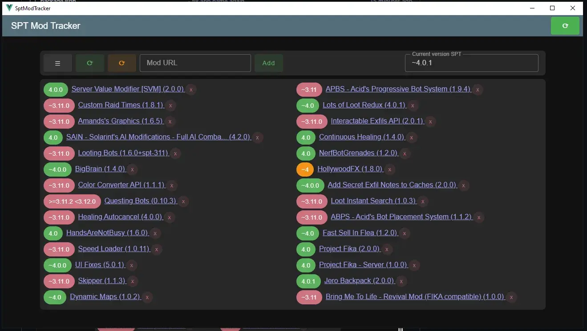
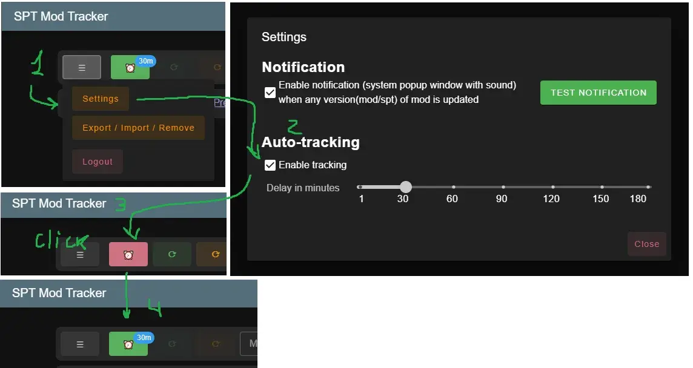
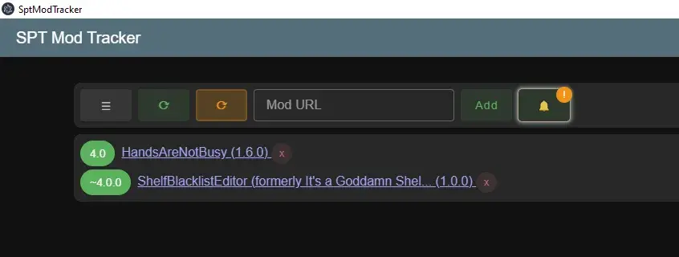
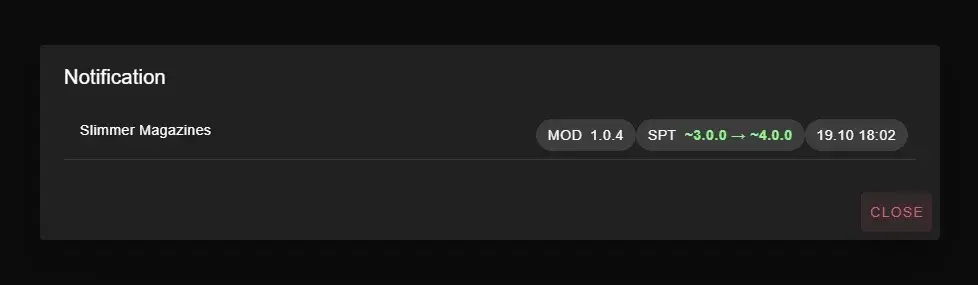

SPT Mod Tracker
- Downloads
- 2,684
- Favourites
- 7
- Mod lists
- 1
THIS IS NOT MOD INSTALLER/UPDATER
THIS IS NOT MOD INSTALLER/UPDATER
THIS IS NOT MOD INSTALLER/UPDATER
Allows you to create a mod list and visually display the version status of these mods relative to the selected SPT version.

How to use?
- Simply unzip the archive anywhere and run the .exe file
- After running it, you’ll need to obtain an API TOKEN (read-only permissions are required). here https://forge.sp-tarkov.com/user/api-tokens After logging in, the main interface will appear.
- Next, copy the link to the mod you want from SPT-FORGE (example https://forge.sp-tarkov.com/mod/791/sain-solarints-ai-modifications-full-ai-combat-system-replacement), paste it into the “mod url” text field, and click the “Add” button.
- ???
- PROFIT!!!
Where is the data stored?
%appdata%\sptModTracker
SPT Discord thread
https://discord.com/channels/875684761291599922/1439852757212201080
Version
1.0.10
- new algorithm of version comparison
- added tray menu option “Show DevTools”
Version
1.0.9
- added settings option “Enable update all mods on app start”
- added protection against calling the update process if it has already been started
- improved error logging
Version
1.0.8
Virustotal detect McAfee Scanner Ti!0804CA0D80E8 I still don’t understand what the reason could be, but I suspect the problem is that I added the app’s permissions to send system notifications.
Feature:
- added settings menu option
- added auto-tracking by delay
- added system notification
- minimizing the application now hides the application (expand via tray)
- new app icon

Version
1.0.7
- added a notification dialog (information about mod updates)
- notification history is not saved and will be lost after restarting/reload the application.


Version
1.0.5
The tool was not intended for open source release, so the current interface may seem unfamiliar.
The current build is only for Windows x64. The app can be built for Mac or Linux if needed. Let me know in the comments here or on GitHub, and I’ll try to build it.